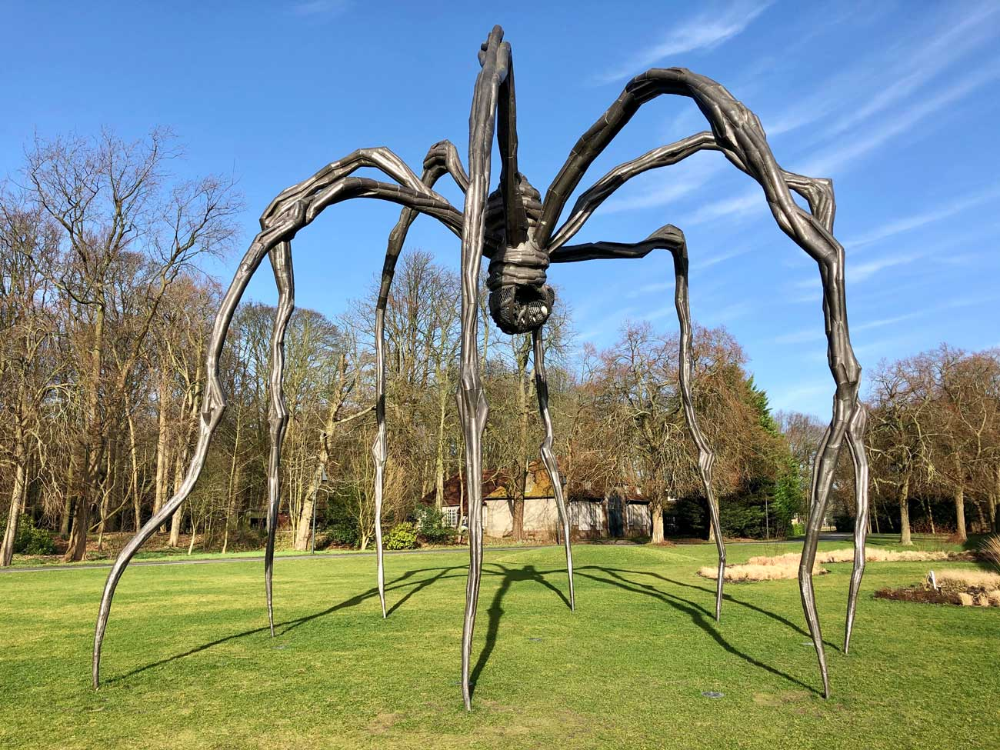
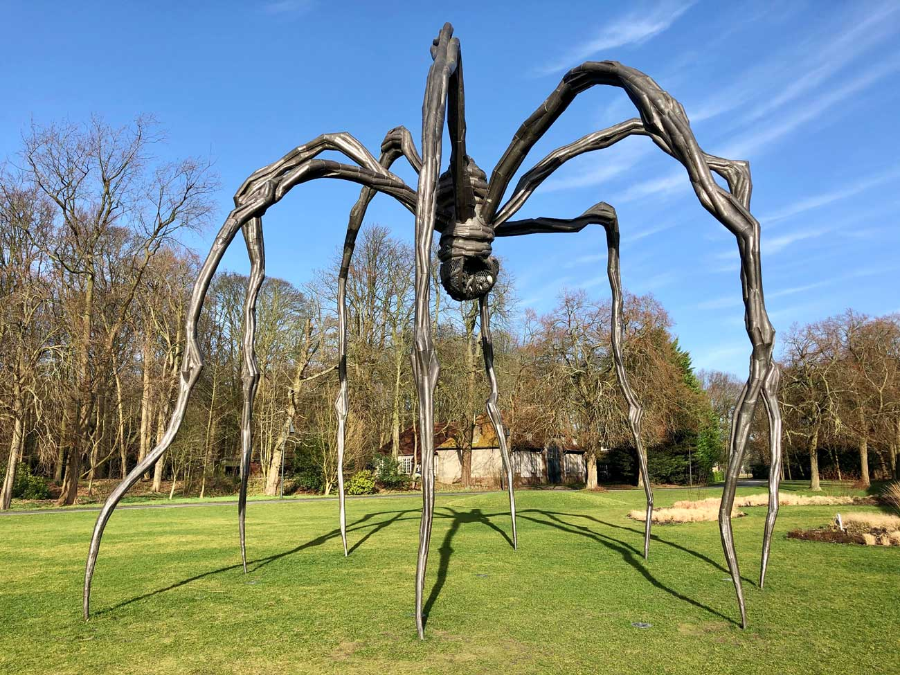

Le symbole de l'araignée
Pour Louise Bourgeois, L'araignée symbolise la mère. Il s’agit d’un hommage que l’artiste rend à l’image maternelle, et plus précisément à sa propre mère, qu’elle a perdu tôt, alors qu’elle n’avait que 18 ans. Pour l’artiste, l’araignée est un animal bénéfique, intelligent, protecteur. Ses sculptures sont une façon de casser les idées reçues : l’araignée peut faire peur, mais c’est justement pour renverser cette image négative que Louise Bourgeois les a crées. Comme de coutume, Louise Bourgeois joue sur l’ambiguïté : cette araignée pourrait également être perçue comme un être menaçant, prêt à emprisonner ses victimes dans sa toile.

 
